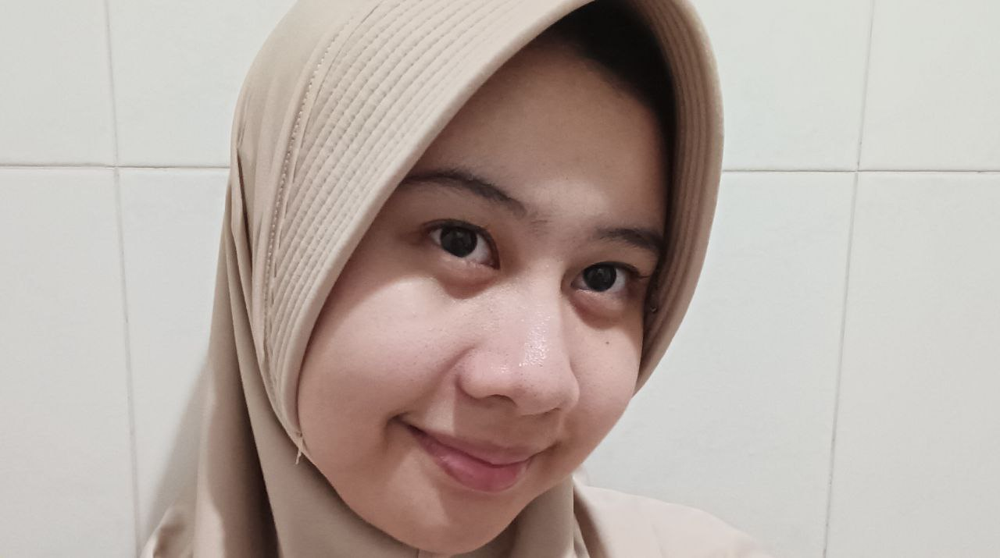

Karya Nyata dari Proses Belajar

Nama saya Fahira Zalfa Ramadhani atau biasa dipanggil Zalfa. Saat ini, saya bersekolah di SMPIT Al Haraki tepatnya di kelas 9 Al-A'raf.
Saya lahir di Kota Depok pada tanggal 17 Agustus 2011. Saya merupakan siswi kelas 9 Al-A’raf di SMPIT Al-Haraki dan sedang mempersiapkan berbagai ujian, termasuk ujian praktik. Di waktu luang, saya mengisi kegiatan dengan berjalan-jalan, bermain game, dan mendengarkan musik. Selain itu, saya juga sesekali berjualan risol di sekolah untuk melatih kemampuan berwirausaha. Sebelumnya, saya pernah menjadi anggota organisasi KKR (Kader Kesehatan Remaja) di sekolah sebagai bendahara. Melalui peran tersebut, saya belajar bertanggung jawab serta mengelola keuangan secara sederhana.
Saya memiliki minat dalam bidang seni rupa, khususnya melukis. Di sisi lain, saya juga memiliki kemampuan dalam menghafal Al-Qur’an dengan capaian hafalan seluruh juz 27 yang telah melalui proses tasmi’ (pengujian hafalan) dan masih terus saya tingkatkan.
Saya masih dalam proses menentukan cita-cita yang ingin dicapai ke depannya. Meskipun belum memiliki tujuan yang benar-benar pasti, saya memiliki ketertarikan pada bidang IPA. Saya merasa bidang ini menarik dan menantang untuk dipelajari lebih dalam. Ke depannya, saya berharap dapat terus mengembangkan diri dan menemukan arah yang sesuai melalui bidang tersebut.
Menurut saya, kelas 9 terasa berjalan sangat cepat, seperti baru saja dimulai tetapi sudah sampai di penghujung semester. Banyak momen seru dan berkesan yang terjadi selama proses belajar, mulai dari kegiatan di kelas, kerja kelompok, hingga kebersamaan dengan teman dan guru yang memberikan banyak pengalaman berharga. Semua hal tersebut membuat kelas 9 menjadi tahun yang penuh cerita dan kenangan yang sulit dilupakan.
Selain itu, kelas 9 juga diwarnai dengan berbagai persiapan ujian, seperti TKA yang cukup membuat suasana belajar menjadi lebih serius dan menantang. Melalui proses tersebut, saya belajar untuk lebih disiplin, bertanggung jawab, dan mempersiapkan diri dengan lebih baik. Secara keseluruhan, kelas 9 memberikan banyak pelajaran penting yang tidak hanya bersifat akademik, tetapi juga membentuk kedewasaan dan kesiapan untuk melanjutkan ke jenjang berikutnya.